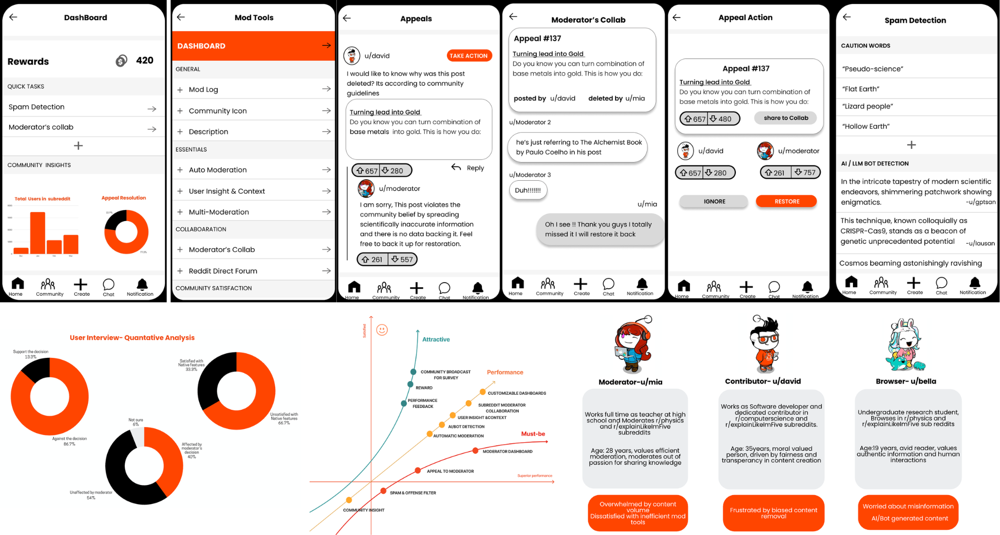

The Challenge
When Community Governance Becomes a Retention Risk
Reddit's value comes from its diverse communities, but the platform's decentralized moderation model creates a difficult trade-off: communities need autonomy, while users need consistent, fair, and transparent enforcement.
The 2023 API pricing controversy brought these tensions into focus. Changes affected third-party applications such as Apollo and RIF, which some moderators and users relied on for better moderation capabilities and user experiences. The resulting blackout exposed deeper questions about moderator power, censorship, and Reddit's dependence on external tools.
Problem statement: Reddit's moderation unfolds layers of challenges with inefficient Moderation tools making it difficult for moderators to effectively manage large communities. And moderation structure leading to power imbalances with moderators potentially misusing their authorities. Thus, eroding user trust, reduced customer satisfaction and reliability on the platform.
Product challenge: How might Reddit improve moderation efficiency and accountability within its own platform without undermining community autonomy?
Root-Cause Analysis:
Connecting Fragmented Problems
The initial challenge appeared to involve several separate issues: API pricing, third-party app dependence, moderation inefficiency, and censorship concerns. The product opportunity emerged from connecting them.
| Observed issue | Underlying concern | Product implication |
|---|---|---|
| API pricing changes and third-party app disruption | Moderators and users depend on tools outside Reddit's control | Strengthen native moderation capabilities |
| Inefficient moderation workflows | Moderators struggle to manage high content volumes | Reduce operational friction through better tooling |
| Concentrated moderator authority | Users have limited visibility or recourse when content is removed | Improve transparency, appeals, and accountability |
| Concerns about bots and content authenticity | Users need confidence in the quality of community discussions | Explore better content-quality signals and review tools |
Key strategic insight: These issues were interconnected. Improving moderation infrastructure could address both operational efficiency and the trust concerns surrounding how community decisions were made. This shifted the solution away from treating each controversy independently and toward a unified, in-platform moderation experience.
Research and Evidence
Understanding the Stakeholders
The research is structured around three stakeholder groups because the problem affected people differently depending on their role in the community.
| Persona | Core pain point | Product need |
|---|---|---|
| Moderator | High content volume and inefficient tools | Faster, more coordinated moderation workflows |
| Contributor | Frustration with potentially biased or unexplained content removal | Transparent decisions and a meaningful appeals process |
| Browser / Consumer | Concerns about misinformation and inauthentic, bot-generated content | Greater confidence in community content |
Quantitative Analysis
I analyzed Reddit-related discussions across two periods:
- Before the API announcement: April 2022–March 2023
- After the announcement: April 2023–March 2024
The analysis covered communities including r/all, r/TheoryOfReddit, r/AskReddit, and r/RedditAlternatives. Discussion volume, posts, comments, and upvotes for User Intent to leave Reddit were used to examine changes in attention and sentiment around the controversy.
The analysis reported increases of at least 4× across the tracked discussion measures after the announcement. Interpretation: The controversy coincided with a substantial increase in discussion activity, supporting the need to investigate user dissatisfaction and platform trust. These observational comparisons do not establish that API pricing alone caused the increase or that users actually churned.
Qualitative interview findings
| Research finding | Product implication |
|---|---|
| 86.7% opposed the API pricing decision | Preserve critical workflows and reduce reliance on third-party tools |
| 66.7% were dissatisfied with native features | Prioritize usability and moderation functionality |
| 40% reported being affected by moderators | Investigate transparency, appeals, and accountability |
Market Analysis: Segments of audience were moderators (13%), browsers (67%), and contributors (20%), with a reported 66% Gen Z and 33% adult demographic split; mapped the opportunity to estimated Market size of $5.3B TAM, $3.91B SAM, and $850M SOM.
Competitive Analysis: Benchmarked Reddit against Quora, X, and Discord across user experience, anonymity, moderation tools, and content quality control, identifying inconsistent cross-community experiences, limited native moderation capabilities, and opportunities to strengthen platform trust and moderator support.
Together, the research pointed toward two connected opportunities: make moderation easier to perform and make moderation decisions easier to trust.
Product Strategy
From Research to a Unified Solution
Vision: To retain Reddit being a global community of diverse voices and perspectives, where people can freely share ideas, engage in open discourse, and expand their understanding of the world.
The strategy was to strengthen Reddit's native moderation infrastructure rather than make communities depend on third-party applications for essential workflows. Developed ModHub around four product pillars:
| Product pillar | Strategic rationale |
|---|---|
| Moderator efficiency | Reduce friction in repetitive and high-volume tasks |
| Content quality | Help moderators identify spam, policy violations, and potentially automated content |
| Collaborative governance | Improve coordination among moderators and communication with Reddit |
| Community accountability | Give users a clearer path to challenge potentially incorrect moderation decisions |
This approach addressed both sides of the trust problem. Moderator tools would improve the ability to govern communities, while appeals and feedback mechanisms would give users greater visibility and recourse.
Solution Design: ModHub
ModHub was proposed as an integrated moderation workspace within Reddit
| Feature section | Proposed capabilities | User problem addressed |
|---|---|---|
| Customizable Dashboard | Configurable widgets, approval and rejection shortcuts, community insights, rewards | Fragmented workflows and poor visibility into priority tasks |
| Moderator Essentials | Spam and policy-violation filtering, AI-assisted bot flagging, user context, multi-subreddit moderation | High content volume and repetitive manual review |
| Moderator Collaboration | Shared workflows across moderators and a direct channel to Reddit's team | Coordination challenges and limited escalation paths |
| Community Satisfaction | Appeals for removed or flagged content, appeal tracking, community broadcasts, feedback surveys | Low transparency and limited user recourse |
Key product trade-off: Automation could help moderators handle volume, but automated flags should support human review rather than automatically determine every disputed case. Similarly, moderator autonomy should remain intact while decisions become more transparent and contestable.
Prioritization and Success Measurement
RICE and the Kano model were used to structure feature prioritization. RICE helped compare candidate features through reach, impact, confidence, and effort; Kano provided a complementary lens for distinguishing basic expectations from features that could improve the experience. The intended priority was to address essential moderation workflows and trust mechanisms before expanding into supplementary engagement features.
Proposed measurement framework
| Metric category | Measures | What they would help evaluate |
|---|---|---|
| North Star direction: Community engagement and satisfaction | User satisfaction score, moderation rate, appeal success rate | Whether communities remain active while moderation and recourse function effectively |
| Counter-metrics | Moderator satisfaction, appeal response time, user complaint rate | Whether efficiency gains come at the expense of moderator workload or user trust |
| Supporting activity metrics | Total moderation actions, appeals filed, active users | How extensively the product is being used |
Measurement consideration: More moderation actions or appeals are not inherently positive outcomes. An increase in appeals could indicate better access to recourse or worsening moderation quality. The metrics would need to be interpreted together, with clear definitions and baselines, rather than optimized independently.